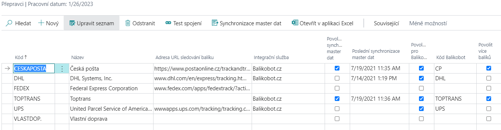

Nastavení - Parcels - Integrace Balíkobot
Aktualizace: 08.03.2022
Pro správné fungování addonu Zásilek je zapotřebí nastavit několik oblastí. Addon se prvotně nastavuje pomocí průvodce a poté je možné nastavení měnit ručně.
Oblasti nastavení addonu:
- Číselná řada
- Expediční místa
- Nastavení Zásilek
- Přepravce
- Nastavení lokací
- Parametry zásilky
- Nastavení tisku
- Nastavení způsobu platby (dobírka)
- Automatické aktualizace
- Nastavení v Sandboxovém prostředí
Ostatní číselníky (Služby přepravce, Manipulační jednotky a Pobočky přepravce) si addon stahuje z API Balíkobotu.
Nastavení Parcels pomocí průvodce
- Vyberte ikonu
 , zadejte Asistovaná nastavení a poté vyberte související odkaz.
, zadejte Asistovaná nastavení a poté vyberte související odkaz. - Vyberte Nastavení zásilek.
- Po přečtení instrukcí klikněte na tlačítko Další.
- Pokud chcete, můžete importovat RapidStart balíček ručně, nebo můžete kliknout na Další a balíček se stáhne a importuje sám.
- V dalším kroku vytvořte nové expediční místo pomocí tlačítka Nový a vyplňte pole:
- Kód
- Uživatelské jméno
- Heslo
- Můžete také vyplnit dodatečné informace:
- Popis
- Jméno
- Adresa
- Město
- PSČ
- V poli Expediční místo vyberte nově vytvořený záznam.
- V dalším kroku vyberte lokaci, vytvořené expediční místo, a klikněte na další.
- Vytvořte nového přepravce pomocí polí:
- Kód
- Jméno
- Integrační služby: Balíkobot.cz
- Kód balíkobot
- Povolit více balíků - ANO
- Synchronizace master dat - ANO
- Vyberte funkci Synchronizovat master data.
- Do pole Číselná řada vyberte patřičnou číselnou řadu pro zásilky.
- Jakmile vše vyplníte a kliknete na Dokončit, asistovaný průvodce se zavře a začnou se synchronizovat master data.
Ruční úprava nastavení
Expediční místa
Expediční místo je místo Vašeho skladu, odkud jsou expedovány zásilky. Uživatel může mít několik expedičních míst. Pro každé expediční místo je nutné jiné API, dále je expediční místo spojeno s jednou lokací Vaší společnosti.
- Vyberte ikonu , zadejte Expediční místa a poté vyberte související odkaz.
- Na přehledu vyberte funkci Nový
- Zadejte Kód pro expediční místo, popis, adresu a Název uživatele a heslo k Vašemu API
- Zavřete přehled expedičních míst pomocí OK

Nastavení lokací
Na kartě dané lokace je potřeba vybrat expediční místo, které je spjaté s daným API. Pokud bude více lokací, je nutné na každé nastavit příslušné expediční místo. Toto slouží k omezení chybovosti uživatelů, aby nemohli spojit do zásilky doklady s různými expedičními místy.
Pro přiřazení expedičního místa lokaci je zapotřebí nastavit Kód Expedičního místa.
- Vyberte ikonu , zadejte Lokace a poté vyberte související odkaz.
- Otevřete kartu požadované lokace
- Vyplňte pole Kód expedičního místa v záložce Obecné

Nastavení Zásilek
Základní nastavení Balíkobotu je nutné provést na stránce Nastavení Zásilek.

Okno nastavení Zásilek obsahuje:
- Čísla zásilek - Číselná řada pro zásilky.
- Kód výchozího expedičního místa - Výchozí expediční místo, odkud budou odváženy zásilky (viz další kapitola)
- Tisk předávacích protokolů svozu – Automatický tisk předávacích protokolů po objednání svozu
- Výchozí název tiskárny – Určuje tiskárnu štítků
- Mezní doba odezvy – Určuje dobu timeoutu komunikace v jednotlivé zprávě
- Povolen protokol aktivity - Spuštění sledování logu aktivity
- Režim ladění – Umožňuje odchytávání zpráv v komunikaci s danou službou
- Automatická synchronizace master dat - Spustí na frontě úloh proceduru, která v určité časové periodě aktualizuje všechna data ze strany Balíkobotu.
- Automatická aktualizace stavu přepravy - Spustí na frontě úloh proceduru, která v určité časové periodě aktualizuje stav přepravy zásilek za poslední měsíc.
Základní nastavení se provede pomocí průvodce nastavení aplikace. Ostatní tabulky se stahují a plní po zapnutí synchronizace master dat. Aktualizace těchto dat probíhá ručně pomocí funkce „Resynchronizace master dat“.
Základní nastavení Parcels - Integrace Balíkobot
Pro spuštění funkcí Balíkobotu je potřeba provést nastavení:
- Vyberte ikonu , zadejte Nastavení Zásilek a poté vyberte související odkaz.
- Vyberte číselnou řadu pro zásilky
- Vyberte kód výchozího expedičního místa
- Povolte nebo zakažte automatický tisk protokolů svozu
- Povolte nebo zakažte Protokol aktivity
Nastavení přepravců
Základní číselník se nahrává pomocí RapidStart balíčku pro Business Central. Tento balíček obsahuje data, která se nestahují z API Balíkobotu:
Tabulka přepravců
Ostatní tabulky se stahují a plní po synchronizaci master dat a v tabulce přepravců. Aktualizace těchto dat probíhá ručně pomocí funkce „Resynchronizace master dat“. 
Přehled obsahuje i dopravce, které nemáte u Balíkobotu nakonfigurované. Pro takové se neprovádí import dalších dat (viz dále).
Na přehledu přepravců je několik polí k nastavení:
- Integrační služba – Určuje, přes jakou integrační službu se přepravce používá (v tomto případě Balikobot.cz)
- Povolení synchronizace master dat – Po zapnutí se mohou stáhnout master data
- Poslední synchronizace master dat – Datum poslední synchronizace master dat
- Povoleno pro Balíkobot - Přepravce je povolen a je možné ho používat
- Povolit více balíků - Při vytváření zásilky umožní funkce vytvořit více balíků v rámci jedné zásilky
- Paletová přeprava
- Počet manipulačních jednotek - U paletové přepravy je možnost nastavit více manipulačních jednotek
- Pouze pobočky – Určuje, že přepravce slouží pouze jako výdejní místo
- Maximální délka adresy – Nastavuje délku adresy u vybraného přepravce
Funkce nad přepravci
- Test spojení – Test komunikace mezi integrační službou a Business Central
- Synchronizace master dat – Spustí synchronizaci master dat
- Služby přepravců - Tabulka služeb jednotlivých přepravců
- Pobočky přepravců - Tabulka lokalit, kde si mohou zákazníci zboží od přepravce převzít
- Manipulační jednotky - Tabulka manipulačních jednotek paletové přepravy
- ADR jednotky přepravce – Tabulka ADR jednotek přepravce
Pokud přidáte přepravce až poté, co byla provedeno prvotní nastavení pomocí asistovaného nastavení, je nutné správně vyplnit pole:
- Kód
- Adresa URL sledování balíku
- Integrační služba
- Kód Balíkobot
Poté je nutné použít funkci Synchronizace master dat!
Nastavení služeb přepravců
Služby přepravců se stahují automaticky pomocí API Balíkobotu. Je možné vynutit určité nastavení pro jednotlivé služby přepravce. Postup pro nastavení :
- Vyberte ikonu , zadejte Přepravci a poté vyberte související odkaz.
- V seznamu vyberte požadovaného přepravce a zvolte funkci Služby přepravce
- Na následující stránce vyplňte pole dle potřeby:
- Povoleno pro Balíkobot - Službu je možné používat (ve výchozím stavu povoleno)
- Vynutit hmotnost zásilky
- Vynutit objem zásilky
- Vynutit cenu zásilky
- Vynutit dobírku zásilky
- Vynutit variabilní symbol zásilky
- Hmotnost na řádku - Hmotnost musí být vyplněna v řádku zásilky
- Služby ČP – Pouze pro Českou poštu - dlouhý textový řetězec služeb pošty nad danou zásilkou o https://www.balikobot.cz/dokumentace/cp_ciselnik_sluzeb.pdf
Nastavení API Balíkobotu
Tato systémová tabulka umožňuje nastavit rožšířené nastavení přepravců. Jde o nastavení pro API komunikaci, kde je možno u vybraných přepravců vybírat verze komunikací a další.
Z administrátorského hlediska, je zde možnost nastavit kód přepravce pro komunikaci v případně změn od Balíkobotu (pole API kód přepravce), kdy je název API přepravce delší než 10 znaků. (například DHL Freight EuroConnect, který měl název API "dhlfreight" a nyná využívá "dhlfreightec")
Parametry zásilek
Parametry pro jednotlivé přepravce jsou stahovány z API balíkobotu.
Nastavení způsobu platby - Dobírka
Pro nastavení a používání funkce zásilka na dobírku je zapotřebí nastavit na způsobu platby boolean Dobírka.
- Vyberte ikonu , zadejte Způsob platby a poté vyberte související odkaz.
- V přehledu zaškrtněte možnost Dobírka.
- Zavřete přehled způsobu platby.
Nastavení tisku
PDF reader
Pro tisk štítků je zapotřebí mít nainstalovaný PDF reader. Pro práci se štítky doporučujeme Foxit pdf a také ho mít nastavený jako výchozí program pro PDF soubory.
Výběr formátu tisku – klientská zóna
Základním krokem nastavení tisku štítků je definice, jakým způsobem se budou generovat PDF se štítky ze strany Balíkobotu. V klientské zóně (https://client.balikobot.cz/) uživatel musí nastavit, zda se bude tisknout ve formátu na celou stránku nebo dle pozic na papíru velikosti A4. Vše záleží na tom, na jaké tiskárně se bude tisknout. Pro tisk na tiskárně pro štítky se nemusí vybírat pozice tisku štítku.
Výběr tiskárny
Pro nastavení tisku štítku je potřeba nastavit ID sestavy a přidělit uživateli tiskárnu. Funkce tisk štítků je nastavená, aby tiskla na definované tiskárně.
Nutné pro definice tiskárny:
- Vyberte ikonu , zadejte Výběry tiskáren a poté vyberte související odkaz.
- Zvolit Nový.
- Vyberte ID uživatele, ID sestavy 52068430 a Název tiskárny
Tisk předávacího protokolu se tiskne automaticky po objednání svozu. Pokud uživatel nechce automatický tisk, stačí v Nastavení Balíkobotu vypnout Boolean - Tisk předávacích protokolů svozu. Tisk se provádí z Výchozí tiskárny dle Vašeho zařízení. Případně, pokud máte nastavenou výchozí tiskárnu ve Výběry tiskáren, stejně jako ostatní Vaše tiskové sestavy.
Automatické aktualizace
Automatická aktualizace master dat
Automatická aktualizace master dat spustí na frontě úloh proceduru, která v určité časové periodě aktualizuje všechna data ze strany Balíkobotu (Ve výchozím stavu v neděli ve 14:00).
Pro zapnutí této funkce postupujte následujícím způsobem:
- Vyberte ikonu , zadejte Nastavení Zásilek a poté vyberte související odkaz.
- V Nastavení zásilek zapněte "Automatická aktualizace master dat".
- Uživatel bude vyzván k založení a otevření nové položky fronty úloh, která bude ve stavu "Vyčkávat".
- Poté je možné nastavení zavřít.
Automatická aktualizace stavu přepravy
Automatická aktualizace stavu přepravy spustí na frontě úloh proceduru, která v určité časové periodě aktualizuje stav přepravy zásilek za poslední měsíc.
Pro zapnutí této funkce postupujte následujícím způsobem:
- Vyberte ikonu , zadejte Nastavení Zásilek a poté vyberte související odkaz.
- V Nastavení zásilek zapněte "Automatická aktualizace stavu přepravy".
- Uživatel bude vyzván k založení a otevření nové položky fronty úloh, která bude ve stavu "Vyčkávat".
- Poté je možné nastavení zavřít.
Nastavení v Sandboxovém prostředí
Zablokování modulem runtime
Při asistovaném nastavení add-onu se může zobrazit hláška "Požadavek byl zablokován modulem runtime".
Pro vyřešení tohoto problému postupujte následujícím způsobem:
- Vyberte ikonu , zadejte Správa rozšíření a poté vyberte související odkaz.
- Otevře se stránka Nainstalovaná rozšíření.
- Zvolte řádek rozšíření Parcels a poté použijte akci Konfigurace.
- Na stránce Konfigurace rozšíření aktivujte přepínač Povolit požadavky HttpClient.
- Poté stránku můžete zavřít a spustit znovu Asistovaného průvodce.
Nastavení PaperLess Trade
Zapnutí Paperless Trade u přepravce
Paperless Trade slouží k odeslání elektronické faktury (případě pro-forma faktury) pro celní řízení.
Pro správné nastavení postupujte tímto způsobem:
- Vyberte ikonu , zadejte Přepravci a poté vyberte související odkaz.
- Na přehledu přepravců vyberte přepravce, u kterého chcete službu zapnout.
- Službu zapnete vybráním pole Paperless Trade.
- Po nastavení můžete přehled zavřít.
Automatické připojení faktury k zásilce
Pro správné fungování Paperless Trade musíte k zásilce připojit PDF soubor faktury (pro-forma faktury).
V případě vytváření zásilky z účtované prodejní faktury je možné vygenerovat doklad a připojit ho automaticky při vytváření zásilky. Pro správné nastavení pokračujte tímto způsobem:
- Vyberte ikonu , zadejte Přepravci a poté vyberte související odkaz.
- Na přehledu přepravců vyberte přepravce, u kterého chcete zapnout automatické vytváření dokladu.
- Automatické vytváření PLT dokladů zapnete vybráním pole Vytvořit PLT dokument.
- Po nastavení můžete přehled zavřít.